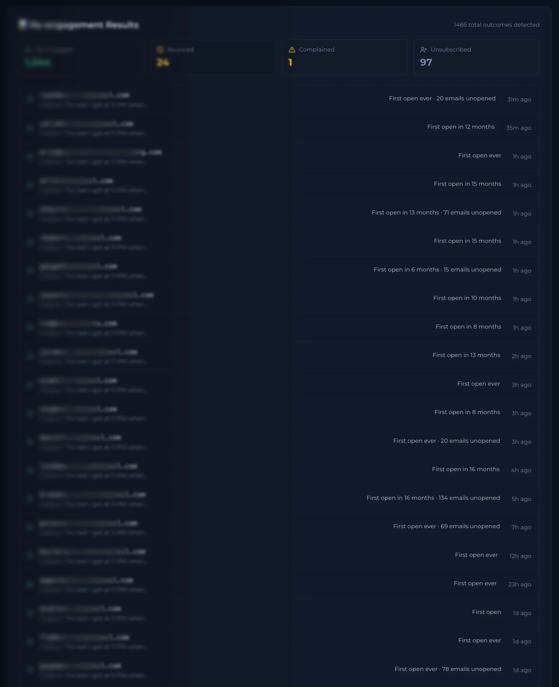
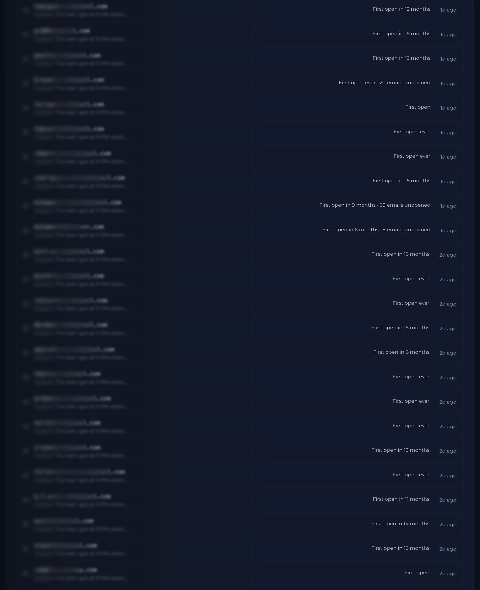
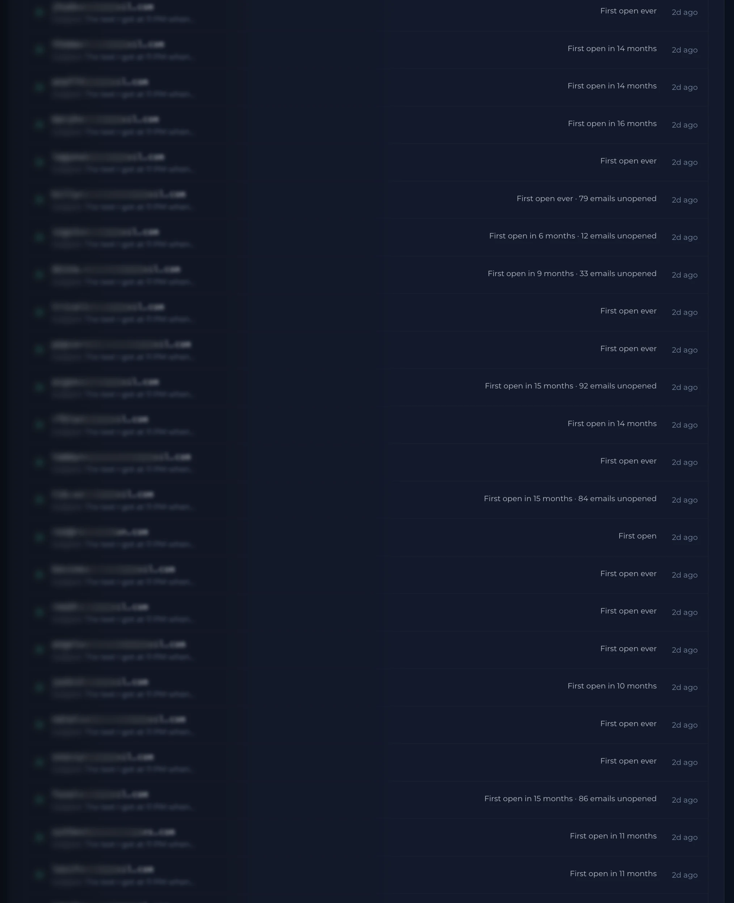
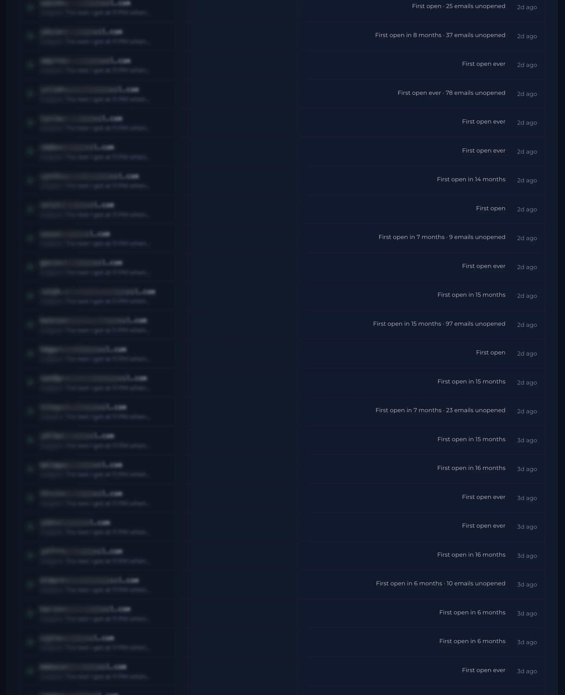
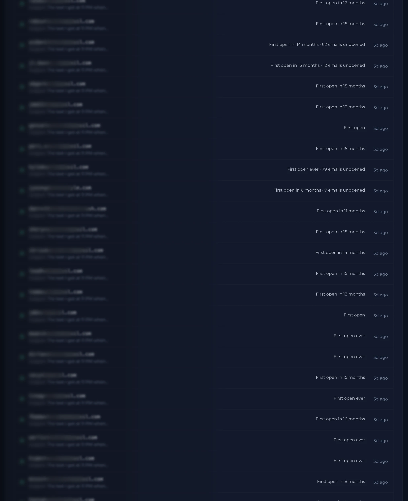
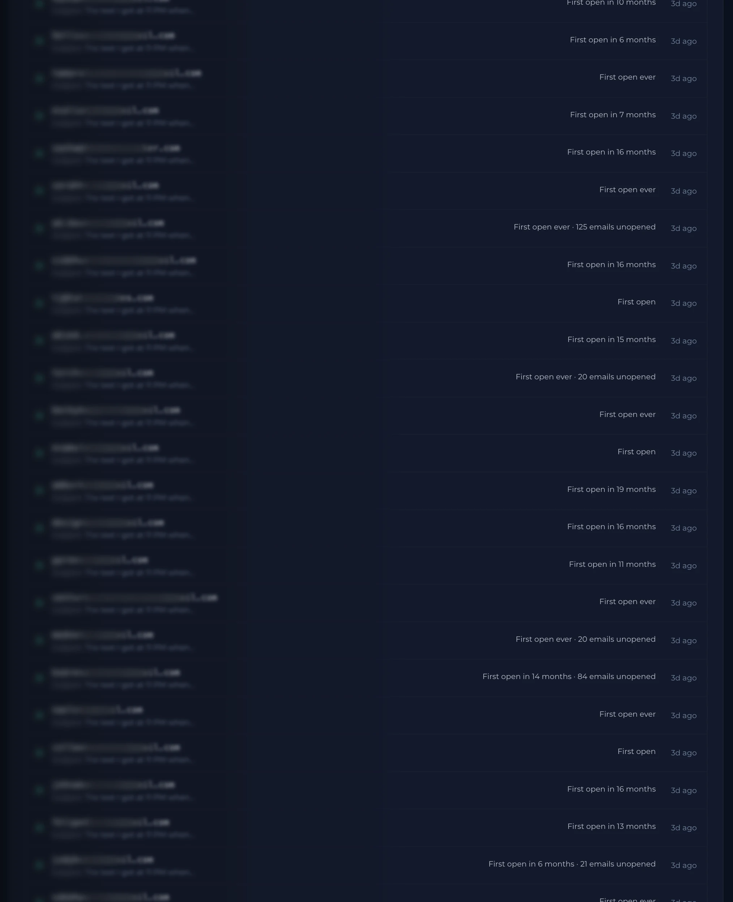
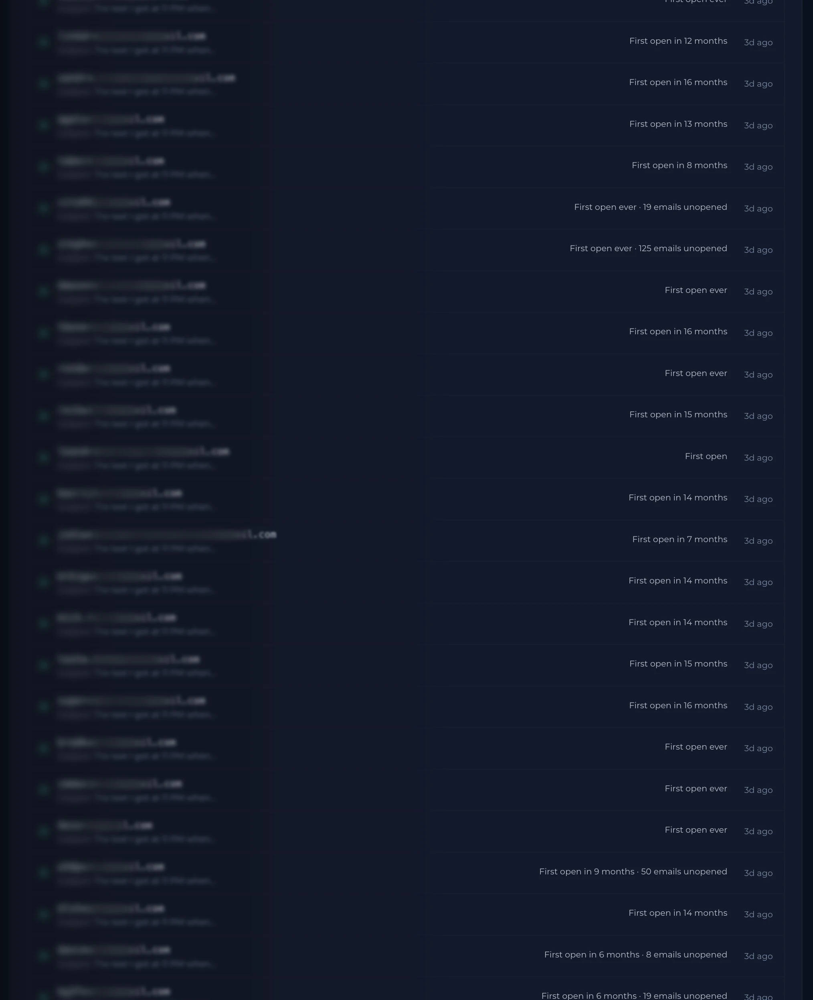
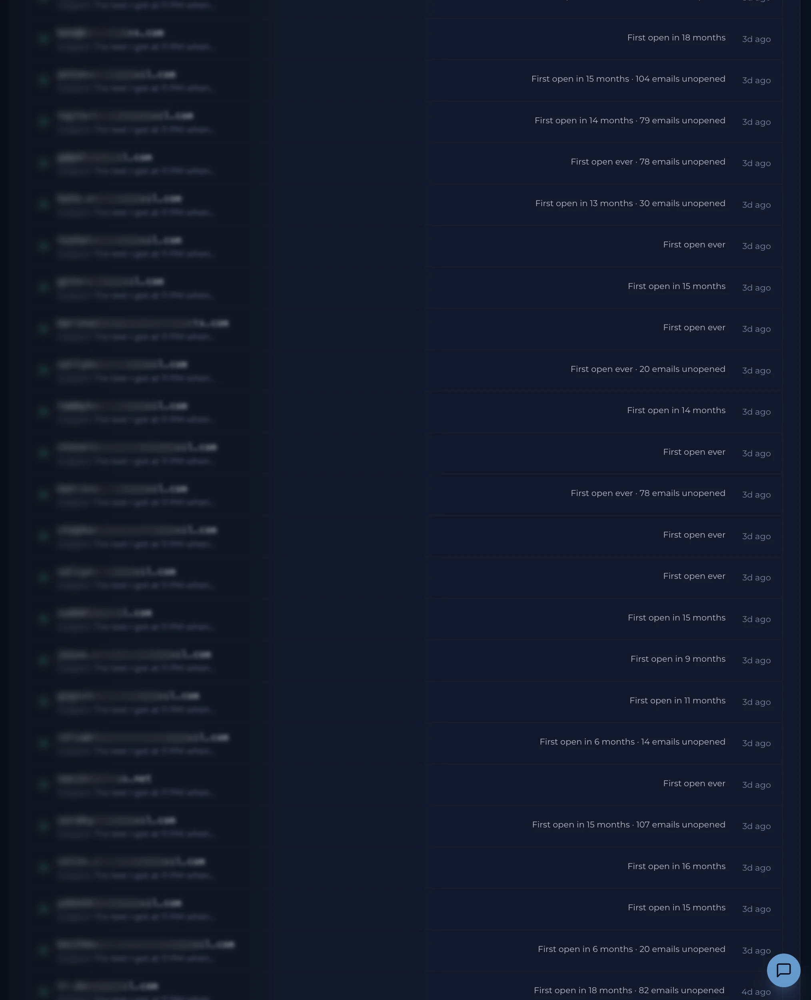

This is one sender's dead list, waking up.
Real account. Real subscribers. Masked for privacy, and every number is real.
Half your email list is quietly wrecking the other half.
Dormant subscribers drag your reputation down, and mailbox providers quietly move your paying customers from the inbox to the spam folder.
Mail them. Delete them. Ignore them. All three lose.
Dormant subscribers are not dead. They are just dangerous to wake up by hand.
First open in 15 months. First open ever.
71 ignored emails, then an open. That is what recovery actually looks like.
The job no human can do.
One email at a time, never batches. Inside your sending window. At 2 a.m., on a Sunday, every time.
Your domain is the one thing we won't risk.
Deliverability is watched continuously across every major mailbox provider. If anything approaches the danger zone, sending pauses automatically.
1,344 recovered. One complaint.
You are watching the audit trail of a live account, not a highlight reel.
21.6% of a 'dead' list came back.
Some campaigns clear 35%. Some land in the teens. The point is the platform ran the whole thing safely, on autopilot.
Proprietary, patent-pending mechanisms.
You get the outcomes. The engine room stays closed.
25 years in digital marketing. 16 solving email deliverability.
Email Admin for 26,000 businesses. Author of Phantom Engaged.
You don't need the full 15%. You need a sliver.
A 50k list at 40% dormant holds $9,000 a month in recovery potential, against $147.
Wake the list. Keep the domain.
Your list has rows like these waiting.
This is not a demo.
This is one sender's dead list, coming back to life.
Scroll to watch.